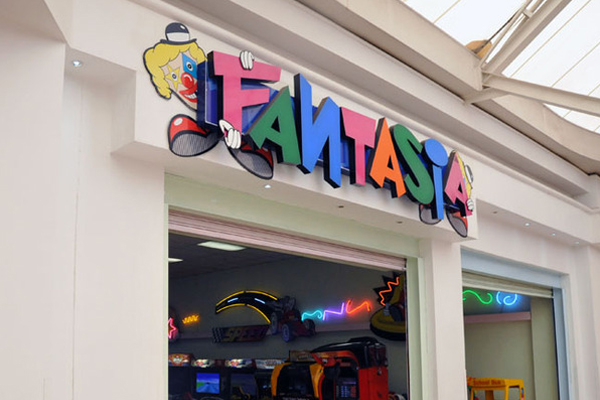

FANSTASIA
An arcade game is a game machine typically found in public places like malls, restaurants and amusement arcades, and is usually coin operated. Arcade games are usually video games, pinball machines or electromechanical games. The late 1970s through the 1980s was the golden age of the arcade games.